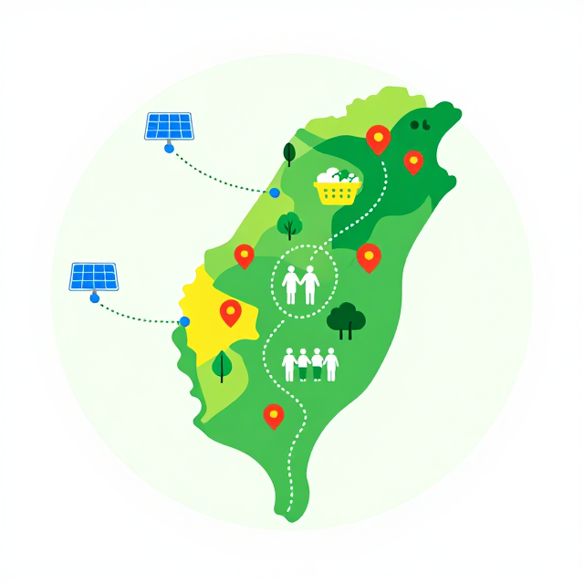

轉型的未來:誰的未來?
氣候正義與公正轉型|國中 Level IV
造成氣候變遷的人 ≠ 承擔後果的人
起點
同一場氣候危機,為什麼承受的人不一樣?
🛥️
高排放群體
豪華消費
排碳多,卻有資源避災
🏚️
低排放群體
受災家庭
排碳少,卻先承受洪水、熱浪
這就是氣候不正義——責任、分配、程序都失衡。
活動一
誰造成、誰承受?
看見排放的不正義
活動一・步驟 1
暖身問答
1
誰排放最多溫室氣體?2
誰最先受到氣候災害衝擊?3
這兩群人是同一群嗎?把責任「平均分配」,公平嗎?
活動一・步驟 2
最富 10% vs 最貧 50%:誰在排碳?
排放不平等長條圖
比例圖
最富 10% vs 最貧 50%:誰在排碳?
資料來源:
聯合國環境署 — 2023 排放差距報告
活動一・步驟 3
氣候正義:三個核心提問
責 任
誰造成?
過去誰排碳最多?歷史責任怎麼算?
分 配
誰受害、誰得利?
轉型成本與好處,公平分配了嗎?
程 序
誰能參與決策?
受影響最深的人,有沒有被聽見?
用這三個問題,檢視任何一個「綠色」政策是否真的公正。
活動一・步驟 3
不行動的代價:1.32 億人陷貧
災害熱點地圖+人口符號
概念整理圖
不行動的代價:1.32 億人陷貧
資料來源:
世界銀行 — 衝擊波:氣候變遷對貧困的影響
活動二
原住民的智慧與歷史的集體行動
多元知識與制度改變的力量
活動二・步驟 1
原住民守護全球 80% 生物多樣性
5% 土地 vs 80% 生物多樣性 圓餅圖
世界連線圖與教學標記
原住民守護全球 80% 生物多樣性
資料來源:
聯合國糧農組織 — 拉美原住民與部落森林治理報告
活動二・步驟 2
歷史的鏡子:集體行動如何改變制度
| 運動 | 時間 / 地點 | 結果 |
|---|---|---|
| Chipko 抱樹運動 | 1973 印度 | 促成森林法改革 |
| 美國民權運動 | 1963 華盛頓大遊行 | 推動民權法案 |
| 反種族隔離運動 | 1980-90 年代南非 | 建立平等憲政體制 |
| RCA 女工集體訴訟 | 1990 年代台灣 | 歷史性賠償判決 |
共通條件:組織・長期抗爭・敘事・跨群體結盟・堅持
活動二・步驟 4・學習單(投影版)
三個關鍵字:總結集體行動的力量
請寫下你認為「集體行動之所以成功」的三個關鍵字,並在組內輪流分享。
第 1 個
__
(自由填寫)
第 2 個
__
(自由填寫)
第 3 個
__
(自由填寫)
活動三
治標還是治本?
剖析氣候解方的公正性
活動三・步驟 1
治標 vs 治本:一個診斷工具
大樹圖——樹葉(症狀)vs 樹根(根源)
比較圖
治標 vs 治本:一個診斷工具
活動三・步驟 1
案例解剖一:電動車轉型
電動車 vs 採礦場 對比照
比較圖
案例解剖一:電動車轉型
活動三・步驟 1
案例解剖二:碳稅
能源支出佔家庭收入比例 階梯圖
比例圖
案例解剖二:碳稅
活動三・步驟 1
案例解剖三:大規模種樹/碳補償
單一物種人工林 vs 原始森林 對比圖
比較圖
案例解剖三:大規模種樹/碳補償
活動三・步驟 2
台灣 2050 淨零:把「公正轉型」寫入戰略
12 戰略網格,圈出「公正轉型」
趨勢圖
台灣 2050 淨零:把「公正轉型」寫入戰略
資料來源:
國家發展委員會 — 臺灣 2050 淨零排放路徑
活動三・步驟 2
公正轉型的價碼:每年 1.5 兆美元
資金缺口示意圖
概念整理圖
公正轉型的價碼:每年 1.5 兆美元
資料來源:
國際能源總署 — 2023 世界能源展望
活動三・步驟 3
個人行動 vs 集體行動:都要做
個 人 行 動
🧑
道德基礎
關燈、吃素、搭捷運
最多減少 30% 個人碳足跡
集 體 行 動
🤝
結構槓桿
投票、加入社團、寫信給議員
另外 70% 來自結構,需共同改變
不是「個人 or 集體」,而是「個人 + 集體」。
活動四
我們的氣候正義行動提案
把分析變成下一步行動
活動四・步驟 1
未來世代的席位:誰替還沒出生的人發聲?
空椅子(寫著「2050 出生的孩子」)
趨勢圖
未來世代的席位:誰替還沒出生的人發聲?
活動四・步驟 2
四個關鍵數據,當你的論證武器
50%
最富 10% 排放占比
1.32 億
恐陷貧困人數
80%
原住民守護生物多樣性
1.5 兆
全球公正轉型 / 年(美元)
把這四個數字寫進你的 CER 論證,故事會立刻有重量。
活動四・步驟 2・學習單(投影版)
CER 行動提案:Claim・Evidence・Reasoning
| 欄位 | 說明 | 你的提案 |
|---|---|---|
| C 主張 | 你的訴求是什麼? | |
| E 證據 | 引用至少 2 個資料卡數據 | |
| R 推論 | 為何證據支持訴求?如何兼顧弱勢? | |
| 個人行動 | 你自己可以做的 | |
| 集體行動 | 需要結盟與制度改變的 |
完整互動版見 worksheet.html §4
活動四・步驟 3
台灣在地機會地圖:你能參與的空間
台灣地圖+在地行動標記
使用正式臺灣底圖與教學標記

台灣在地機會地圖:你能參與的空間
活動四・步驟 4・學習單(投影版)
承諾牆:三件事,一年後檢視
把承諾寫下來、貼在教室牆上、拍照傳給自己。
本週要做的一件小事:
本月要參與的集體行動:
想寫信表達意見的對象:
我的簽名:
夥伴見證簽名:
完整互動版見 worksheet.html §7
總結
三個關鍵字,帶走整堂課
第 1 個
看見
看見排放、承擔、決策
三層面的不正義
三層面的不正義
第 2 個
診斷
區分治標與治本
用三角框架檢視解方
用三角框架檢視解方
第 3 個
行動
個人 + 集體
從在地切入,規模化參與
從在地切入,規模化參與
改變不必等你長大。
每一張票、每一封信、每一次串連,都是公正轉型的力量。